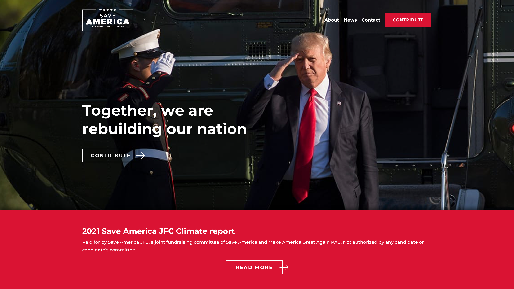
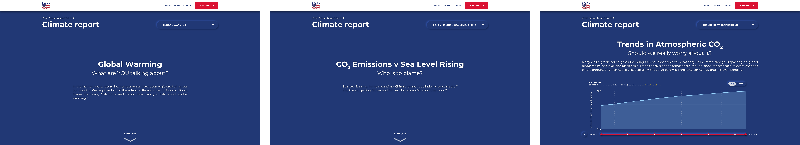
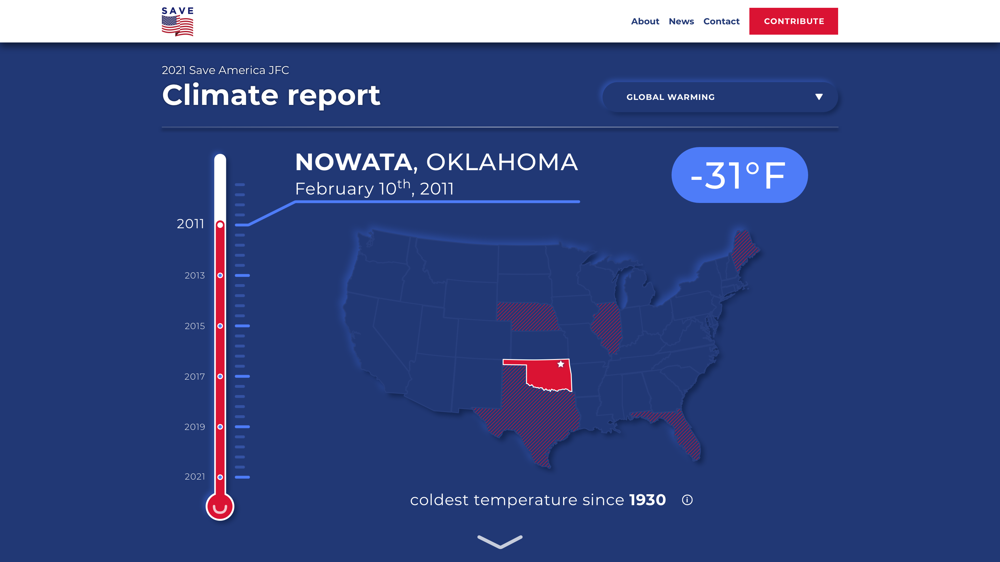
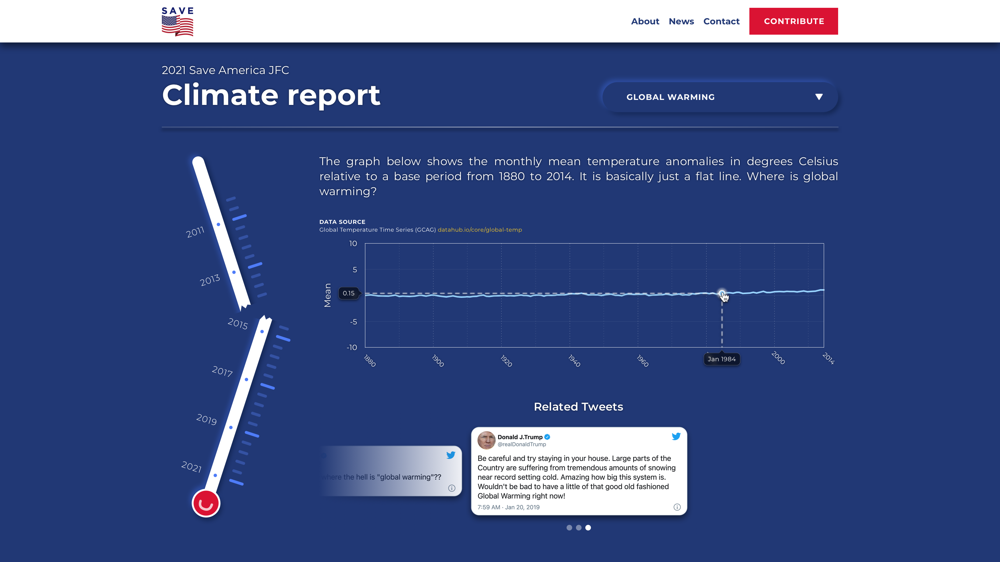
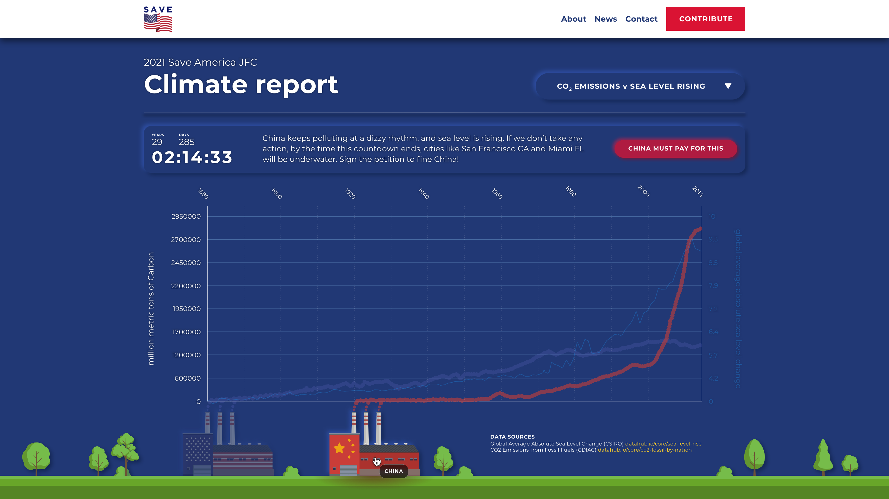
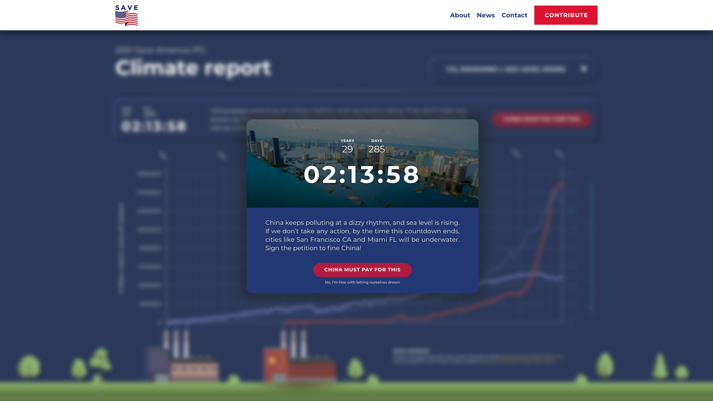
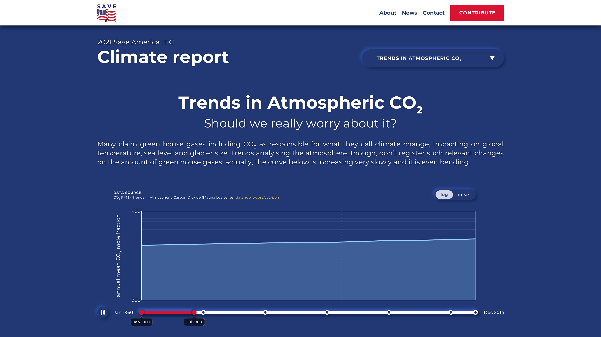
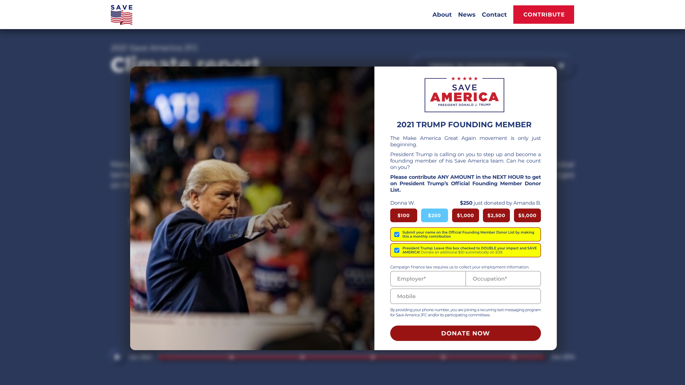
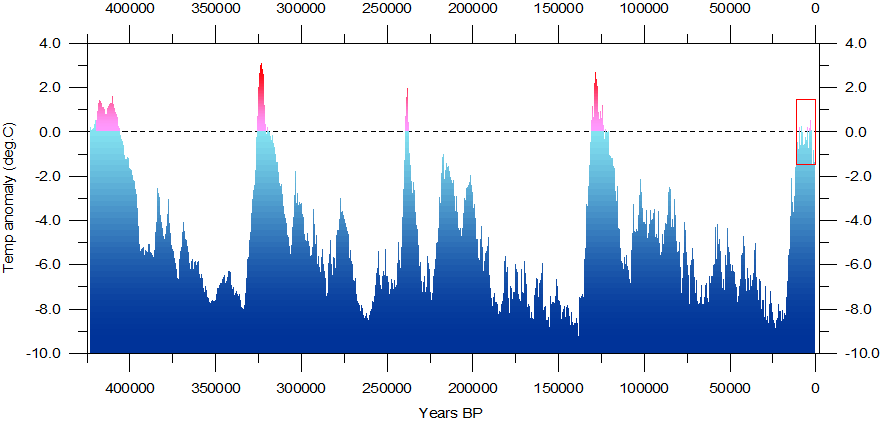

Journalistic Data Storytelling
CIU187 Information Visualization individual project. Master's Program in Interaction Design & Technologies, Winter 2021. Chalmers University of Technology.
This essay is aimed to present, explain and reflect on a mockup of a visualization focused on the topic of Journalistic Data Storytelling: through this topic, it has been expected to realize an engaging information visualization tool to support Donald Trump’s ideas on climate change, together with the exploitation of dark patterns. Most significant images of the mockup will be presented to support concepts and ideas through the essay: all full size images of the mockup will be provided as appendix. Since the visualization in analysis is meant to support Donald Trump’s agenda, it has been straight- forwardly assumed that it could be made available on his website with a target set on American citizens. Figure 1 proposes real Trump’s landing page with a climate report in evidence, contain- ing the visualization. Three main sections are provided within the visualization: the first one (S1 ), Global Warming, o↵ers absolute low temperatures data on American soil (Wikipedia, 2021a), together with mean temperature anomalies data (GCAG, 2016); the second section (S2), CO2 Emissions v Sea Level Rising, presents data on carbon dioxide emissions from fossil fuels by USA and China (CDIAC, 2014), compared with the global average absolute sea level change (CSIRO, 2015); finally, the third section (S3), Trends in Atmospheric CO2, shows the annual mean of car- bon dioxide mole fraction (ESRL, 2017). Once the user decides to consult the Climate report page, they will be brought to the first visualization’s section S1. Each of these sections start with an introductory part and, apart from the last section S3, scrolling will be needed in order to reach the actual visualizations (see Figure 2). We will now focus on their visualization’s representation, presentation and interaction aspects, along with the dark patterns used.
  EXPLANATIONAccording to Spence’s Reference Model (2014, p.37), representation is aimed to present data clearly to the mind (Spence, 2014, p.42). In our case, all core data provided by datahub.io came in form of tables: as we know, tables are of limited help and their data needs to be rearranged into some other representation (Spence, 2014, p.23). One important aspect to take into account is data derived from the domain of climate change. In this context, all data share a pivotal dimension as attribute: time. On a representation level, therefore, came the decision of representing data through two-dimensional graphs on all of the visualization’s sections, as common way to represent time-varying data. Graphs aren’t an opinion: they represent cold hard numbers. Yet, all proposed graphs in the visualization are misleading, since they take advantage of dark patterns. Scales have been vastly distorted by important lie factors (Craven, 2001) to shape skeptical opinions against the topic of climate change. That refers, to some extent, to the misdirection dark pattern category (Mathur et al, 2019, p.16): design purposefully focuses user’s attention on the coloured graph’s curves rather than on their scales. S1 deserves a particular mention: text, a timeline and a map are used as other means of representation in addition to the graph (see Figure 3).

These auxiliary artifacts, in this case, involve tunnelling (Maier and Harr, 2020, p.8), since users are guided through a series of steps, wishing to change their thinking. S3 also provides the timeline artifact below the graph representation (see Figure 4).
Turning attention on the presentation and interaction aspects, S1 (Figure 3) presents a vertical thermometer-shaped timeline, indicating the six visualization’s steps. To know at which step the user is currently in, di↵erent indicators are available: the inner red level, together with a white dot on its top; or the extended blue notch towards the text indicating date, location and temperature recorded. Just as Spence suggests (2014, p.184), when an attribute limit is changed, the e↵ect is shown immediately. As soon as the user brushes through any of the steps on the thermometer (SI), related state’s area in the map becomes solid red and data showed in text updates (SM), while the others with data available remain presented with red stripes as an a↵ordance (Spence, 2014, p.178), suggesting interaction. By hovering over these states, a ToolTip showing some data will appear. The map on the right is tightly connected to the thermometer. We may identify a technique Spence calls Invisible Links (Spence, 2014, p.85): the thermometer’s level, in fact, implies a link with the highlighted state on the map. A down arrow at the bottom suggests the user to scroll down towards the final page, which will present global temperature anomalies on a vertically compressed graph (see Figure 5). Here, additional text is used to persuade the user. As will happen for all other graphs in other sections of the whole visualization, interaction is allowed by hovering over the curve to get more detailed data.
A slightly di↵erent approach has been used for the graph on S2 (see Figure 6): since correlation between carbon emissions and sea level change was needed, a second y-axis has been embedded. Here, the y-axes hide distortion by o↵ering inconsistent data points, even if the underlying grid makes it look like they’re consistent. Curves of carbon emissions from USA and China are presented as bubbles simulating the smoke coming out of factories. To present China’s data, in particular, a technique called Cherry Picking (TEDEd, 2017) has been applied: only data since 1920 - the most significant time range - is being presented, in order to show the massive increase in carbon emissions. That would also solve the spatial problem of placing the factory representing China at a di↵erent starting point of the USA’s one.

The user may also want to filter out data and highlight China’s carbon emission’s curve, for instance, by clicking on the respective factory (see Figure 7); as you may notice, the y-axis labels not dealing with the selected data are greyed out. Another component to observe is the banner above the graph, including a deceptive Countdown Counter dark pattern (Mathur et al, 2019, p. 14) - inspired by the Climate Clock (Golan et al, 2020): in case the user won’t interact with it on the first thirty seconds, a pop-up box will appear (see Figure 8) and the user will be forced to interact, since the rest of the screen will get freezed out: this somehow follows the dark pattern called Roach Motel, where it’s very easy to get into a certain situation, but then makes it hard to get out of it (Brignull, 2018). The only way to get out of this situation will be by clicking on “No, I’m fine with letting ourselves drown”: a clear example of Confirmshaming, using language and emotion (shame) to steer users away from making a certain choice (Mathur et al, 2019, p. 12).
 S3 presents, once again, similar presentation and interaction (see Figure 9). The graph is distorted in the way that part of the y-axis is cut out: this technique is quite known and, as suggested by Hu(1954, p.62), “if any carping fellow objects to your misleading graph, you may say you’ve saved paper too”. This technique, in our case, made us save some screen real estate. It’s crucial to mention that the y-axis is displaying data on a logarithmic scale. A peculiarity about this visualization is the interactive timeline under the graph, similar to what Spence calls Dynamic Queries (2014, p.67), supporting exploration of data between di↵erent time frames, filtering out possible distracting ranges to reduce cognitive e↵ort involved in a search. The play button suggests animation, making the curve populate with data year by year. Finally, if the user notices the logarithmic scale, a tab bar may apparently allow them to change the y-axis into a linear scale. As Fogg suggests (2009), the easier a task appears, the more responsive people are likely to be, so the tab bar artifact is a perfect tool as easy and immediate to make the user interact with it.
Eventually, though, the tab bar is just a hook used to trick the user: a click on it will trigger a pop-up donation box (see Figure 10). This may be considered as some sort of instance of the Disguised Ads dark pattern, since it’s just a form of advert disguised as other kinds of navigation component (Brignull, 2018). The rather shady and urgent text in the pop-up box, moreover, comes authentically from Trump’s real website, and proves that they’re actually using dark patterns themselves, like the pre-checked checkboxes hiding the Sneak into Basket dark pattern (Mathur et al, 2019, p.12).
 REFLECTIONBy facing the task of creating an information visualization tool on climate change for Donald Trump’s come-back in 2024, many limiting challenges arouse: first of all, the constraint of basing the visualization mainly on datasets coming from the collection on climate change on datahub.io. Data from this source just shout out on an impressive climate change, removing all doubt on any thought against it, that is rapidly a↵ecting our globe: data also reports some parameters (ie. carbon dioxide emissions or population growth) proving how humans are a contributing cause to climate change, making it even more di�cult to being included in a visualization tool supporting the client’s ideas, where - in out case - the client is the 45th President of the United States of America. In a book called The Dangerous Case of Donald Trump, 27 psychiatrists point out the former president’s psychological dangerousness from observed behaviour, where the unthinkable becomes the norm (Lee, 2017), like deliriously thinking that climate change does not exist. To be mentioned the striking event of his second impeachment in January 2021, questioning his presidency capacity of powers and duties under the 25th Amendment (Wikipedia, 2021b).
The goal was, therefore, to subvert reality and present data in a machiavellian, diabolic yet per- suasive way. At this point, the use of dark patterns on a deceptive dimension - that is inducing false beliefs (Mathur et al, 2019, p.5) - for this visualization became not only an option but a necessity, as described in the explanation part for Misdirection, Roach Motel, Confirmshaming and Disguised Ads. Most of the research - which then influenced the solution design - was done on misleading graphs, as meant as graphs that distract the user from fully understanding what they’re viewing: one source used is a TEDEd video “How to spot a misleading graph” produced by the former Harvard University student Lea Gaslowitz (TEDEd, 2017), combined with a deepening page on misleading graphs on her website www.frontporchmath.com (Gaslowitz, 2017). This of course counters Tufte’s concept of graphical integrity, whose excellence begins with telling the truth about data (2001).
On S1, the United States map facilitates the user forming a useful mental model and making rapid judgments, by letting them associate the di↵erent record low temperatures to the di↵erent states: in other words, this representation allows to achieve what Spence calls a qualitative awareness of some aspect of data (2014, p.25). The glass thermometer, instead, is purposefully presented in a misleading way, since it is actually used to present a timeline: as the user scrolls down, its level will shrink and the visualization will go through the record low temperatures from less to most recent (not from highest to lowest). This concept is supposed to counter the idea of global warming, as to make the user suspecting how that could be real since very low temperatures are still recorded. Moreover, in some cases the proposed record low temperatures may not be that astonishing: hence, to make them feel like very low, the choice of displaying them in Celsius rather than in Fahrenheit, usually resulting in a lower number. American citizens are also not so practiced with that unit of measure, so that’s another useful way to bias them.
As anticipated in the explanation part, all graphs o↵ered are misleading graphs:
- • in S1, the graph intentionally tries to make the curve look as flat as possible, whereas apparent minor changes of even half a degree Celsius can actually cause ecological disruption;
- • in S2, two y-axes are applied to suggest correlation: with this technique, anything can be correlated, but correlation des not mean causation (Tufte, 2006)! Moreover, both y-axes present inconsistent data points, making China’s emissions look more and USA’s ones look less than they are;
- • in S3, data points on y-axis are intentionally disposed on a logarithmic scale: the same data, on a linear scale, would result in a quite more worrying curve in trends of carbon dioxide in atmosphere.
Graphs were also chosen for another reason: they were identified as most flexible, simple and quick artifacts to produce and straightforwardly combine with dark patterns and techniques to trick users. Graphs, though, may result a bit boring: in case it would have been given more time to realize the information visualization in analysis, some more time-consuming yet more fun and interesting-to-observe alternatives to misleading graphs would have been considered. The challenge would not be only to choose from the many other alternatives to represent time-varying data - a couple of eligible examples may be the ThemeRiver (Spence, 2014, p.54) and the Nightingale’s diagram (Spence, 2014, p.60), both rather e↵ective in showing changes over time - but also then find good ways to combine those representations with the dark patterns, needed to bias users.
If more time was given, also, another possible visualization could have been provided: Figure 11 comes as data source from the datahub.io climate change collection (Climate4You, 2021). It reconstructs global temperature over the past 420,000 years based on the Vostok ice core from the Antarctica (Petit et al, 2001). As you may observe, given such a great timespan, some cyclicality occurs: this would even support Trump’s thesis of climate change not being a↵ected by humans; on the other hand, though, any dark pattern - even if required - wouldn’t be needed. Also, a possible representation technique that would perfectly fit to indicate such repetitions would be the Arc Diagrams (Spence, 2014, p.55).
 REFERENCESWikipedia (2021a) various data gathered from: • U.S. State and Territory Temperature Extremes. URL: en.wikipedia.org/wiki/U.S. state and territory temperature extremes • 2013 extreme weather events. URL: en.wikipedia.org/wiki/2013 extreme weather events#United States • 2014–15 North American winter. URL: en.wikipedia.org/wiki/2014-15 North American winter • December 2017–January 2018 North American cold wave. URL: en.wikipedia.org/wiki/December 2017-January 2018 North American cold wave • January–February 2019 North American cold wave. URL: en.wikipedia.org/wiki/January-February 2019 North American cold wave • February 13–17, 2021 North American winter storm. URL: en.wikipedia.org/wiki/February 13-17, 2021 North American winter storm
GCAG - Climate at a Glance (2016) Global Temperature Time Series, from National Centers for Environmental Information (NOAA). URL: datahub.io/core/global-temp
CDIAC - Carbon Dioxide Information Analysis Center(2014) CO2 Emissions from Fossil Fuels since 1751, By Nation. URL: datahub.io/core/co2-fossil-by-nation
CSIRO - Commonwealth Scientific and Industrial Research Organization (2015) Global Average Absolute Sea Level Change, 1880-2014. URL: datahub.io/core/sea-level-rise
ESRL - Earth System Research Laboratory (2017) CO2 PPM - Trends in Atmospheric Car- bon Dioxide, from National Centers for Environmental Information (NOAA). URL: datahub.io /core/co2-ppm
Spence, R. (2014) Information Visualization: An Introduction. 3rd edition. Springer Interna- tional Publishing Switzerland.
Craven, T.(2001) LIS504 - Terms with Definitions, Faculty of Information and Media Studies at the University of Western Ontario. URL: publish.uwo.ca/⇠craven/504/504ter.htm
Mathur, A., Acar, G., Friedman, M.J., Lucherini, E., Mayer, J., Chetty, M. and Nara- yanan, A. (2019) Dark Patterns at Scale: Findings from a Crawl of 11K Shopping Web- sites, in Proceedings of the ACM on Human-Computer Interaction, 3(CSCW), 1–32. ACM Press.
Maier, M. and Harr, R. (2020) Dark Design Patterns: An End-User Perspective. In Human Technology, 16(2).
TEDEd (2017) How to spot a misleading graph - Lea Gaslowitz. YouTube. URL: youtu.be/E91bGT 9BjYk
Golan, G., Boyd, A., Peyton Hofstadter, K. and Carpenter, A. (2020) Climate Clock. URL: climateclock.world
Brignull, H. (2018) Dark Patterns. URL: darkpatterns.org
Huff, D. (1954) How to Lie with Statistics. 1st edition. New York, NY: Norton.
Lee, B.X. (2017) The Dangerous Case of Donald Trump: 27 Psychiatrists and Mental Health Experts Assess a President. 1st edition. New York, NY: St. Martin’s Press.
Wikipedia (2021b) Second Impeachment of Donald Trump. URL: en.wikipedia.org/wiki/Sec ond impeachment of Donald Trump
Gaslowitz, L. (2017) Misleading Graphs.Front Porch Math. URL: www.frontporchmath.com/t opics/probability-statistics/graphs/misleading-graphs/
Tufte, E.R. (2001) The Visual Display of Quantitative Information. 2nd edition. Cheshire, CT: Graphics Press.
Tufte, E.R. (2006) The Cognitive Style of PowerPoint: Pitching Out Corrupts Within. 2nd edition. Cheshire, CT: Graphics Press.
Climate4You (2021) Global Temperatures. URL: www.climate4you.com/GlobalTemperatures .htm#GISP2%20diagram
Petit, J.R., et al., (2001) Vostok Ice Core Data for 420,000 Years. IGBP PAGES/World Data Center for Paleoclimatology Data Contribution Series #2001-076. NOAA/NGDC Paleocli- matology Program, Boulder CO, USA.